|
Ur En bok om Söder, Per Anders Fogelström, 1953, illustrerad av Stig Claesson
Danvikstull och krokar
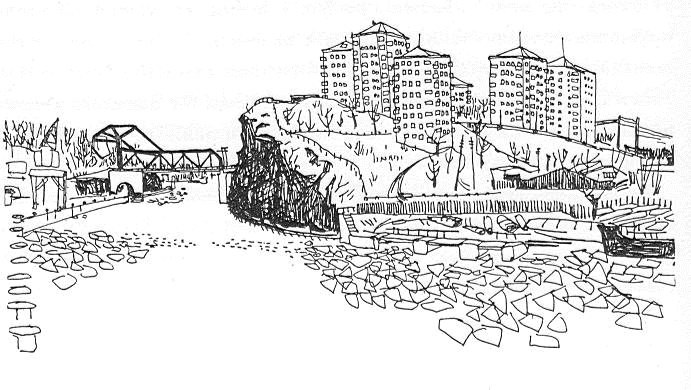
Danviksklippan från söder
DANVIKSTULL IDAG - det är en kaskad av färg och ljud, en effektiv bit utkantsstad. Danviksbrons flaskhals leder till en av landets flitigast trafikerade vägar, bilar och väldiga gula bussar tränger sej fram i aldrig sinande köer.Saltsjöbadståget skjuter ur sin tunnel, kastar sej längs bergkanter och över viadukter, passerar bron medan klockorna ringer vid nerfarten till kvarnen, försvinner in i en ny tunnelsmörker. Pråmar tuffar fram under bron och nithammare dånar vid varvet. Klippans höghus lyser i glada färger under taken som liknar papperskaskar. Spårvagnarna skrapar mot skenorna i vändslingan intill Klockstapelsbacken som leder upp mot Fåfängans lilla bergservering. De väldiga siktarna dunkar på Saltsjöqvarn. Röken bolmar ur stearinfabrikens höga skorstenar. Lumafabrikens provrum lyser med sitt eviga ljus över Hammarby sjös krympande vattenyta. All stadens orenlighet rinner mellan de väldiga renskammarna i reningsverkets grottsalar i berget vid Henriksdal.
Men nere vid leden, tätt intill den stora kvarnen, ligger ett gult tvåvåningshus på en skräptomt, stängt, tyst, glömt. Ändå har detta hus och vad det representerar kallats "den svenska socialvårdens vagga". Det fullvuxna folkhemmet har inte alldeles glömt bort sin gamla vagga - tidningsnotiser har berättat att våra stadsfullmäktige åtminstone diskuterat möjligheten av att förvandla det som en gång var Danviks hospitals kyrka till museum. (Varför inte ett socialvårdsmuseum som kan skildra den utveckling som ägt rum på detta område?)
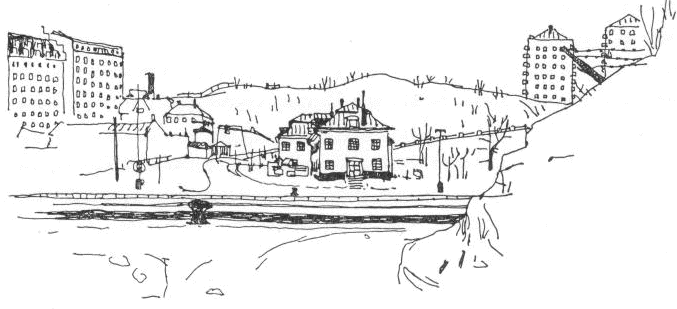
Gamla Danvikshem intill Danvikskanalen från norr. T v Saltsöqvarn, t h Klippans höghus.
Det var Gustav Vasa som beslöt att gamla "helgeandshuset" på Gråmunkeholmen skulle flyttas till Danviken. Som enda skäl för flyttningen nämner han den olägenhet man har i stan av "en mechtig ondh stanck" som sprids från sjukhuset. Därför ska det gamla huset rivas och en ny spetal byggas. "Och vele vij atth the skole bygge först thenn Stuffve, ther the siuke skole liggia udi, hoss vatnett, väl stoor, högh och månge fenster opå, så atth then ondhe lucht therär inne hoss them, motthe' haffve tilfelle atth drage uth egenom fensteren". Kungens tillägg till ordern om stugbyggandet säjer något om vägförhållandena på Söder och den nya spetalens avlägsna läge: så snart isen försvinner ska timmer till bygget föras ut till viken på en flotte. Detta händer 1551. Sex år senare utfärdar kungen en order enligt vilken de sjuka inte längre får ligga i stadens portar eller på gatorna, "de förlamade" ska föras till spetalen och vårdas där. Och för att ge Danviken några ekonomiska möjligheter att klara av alla gamlingar och sjuka läggs Hammarby, Järla, Sickla och Duvnäs egendomar under dess ledning.
Under mer än tvåhundra år var Danviken stadens enda inrättning för kropps- och sinnessjuka och den offentliga fattigvårdens första skyddshem för ålderstigna, orkeslösa och minderåriga, konstaterar J.Müller i sin historik över Stockholms fattigvård.
I gamla kung Göstas många föreskrifter talas det också om vad för sorts figur som bör väljas till syssloman för den nya anläggningen. Det säjs att det ska vara en "som the fattige haffuer käär, then ther och vijll leffua och döö med them ij Hospitalen". Men som den försiktige herre han var tillade kungen:om man en sådan bekomma kan ...
Första gången misslyckades man också grundligt. Hans Jönsson hette mannen som valet föll på och efter några år står den de fattige "haffuer käär" anklagad för en massa stölder och övergrepp.Han har stulit spannmål som han bytt bort mot andra varor, han har ställt sina oxar och får i de fattigas stall och saltat in sitt kött i deras salt. Hans hustru har tagit av "hjonens" öl när hon bränt brännvin till försäljning och hållit en piga på spetalens bekostnad. Och ett stort hus på malmen har Jönsson byggt med drängar och virke från spetalen, en hel del av de intagnas privata ägodelar har han stulit. Det blev galgen för Danvikens första syssloman.
|
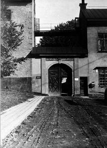
|
|
Danvikens intagna uppdelades i betalande, "fribröd", och icke betalande, "fattigbröd". När den som kunnat donera tillräckligt för att få sitt fribröd kom till hemmet bjöd seden att han eller hon först lyssnade till ordningsreglerna och därefter lovade lyda både regler och ledning och tog alla bröder och systrar i hand till försäkran att leva i frid med dem. I reglerna ingick förbud att utlåna pengar eller göra testamente, att utan medgivande vistas borta över natten, att föra lastbart leverne, orsaka trätor eller slagsmål o. s. v. Den nykomne meddelades också mattiderna: på vardagarna klockan tio, på helgdagarna "när utsungett är ij bykyrkian" serveras frukost och klockan fem middag.
Först var det gamla och sjuka som skickades till Danviken. För de spetälska hade man en särskild liten spetalsstuga, den utökades småningom när man började ta emot även icke-stockholmska spetälskesjuka. Den vård dessa sjuka fick var mycket bristfällig och deras tillvaro måste ha varit ganska outhärdlig - i några små rum blandades kön och åldrar.
Så kom de som led av "fransoserna" eller "grannlåtssjukan", de veneriskt sjuka. Den uppgiften fick Danviken redan då Erik XIV beslöt att de av hans betjänter som hade sådana sjukdomar skulle sändas dit. |
Man hade inte stora möjligheter att hjälpa dem, ännu på sjuttonhundratalet nöjer man sig mest med att "smörja och spotta", säjer en kritisk läkare. 1788 berättar läkaren Anders Hagström att han sällan behövt låta åder på de veneriskt sjuka som skickats till Danviken eftersom "de uslingar som på Curhuset inkomma gemenligen hava genom liderlighet och svält så förlorat krafterna, att man ej behöver minska bloden hos dem".
| Och de sinnessjuka ... Först stuvas de in bland alla andra, småningom blir de så många att man finner det nödvändigt att uppföra ett litet "dårhus" (1640). Trots en del tillbyggnader var"dårhuset" ännu på slutet av sjuttonhundratalet så trångt och litet att den nämnde Hagström ansåg det närmast "tjänligt att skapa dårar". Hans berättelse inför Vetenskapsakademin kan ge några glimtar av behandlingsmetoder och lokalförhållanden:
Varma bad har man inte haft tillfälle att pröva "uti dess trånga Dårhusrum", av de kalla baden har "ej synnerligen verkan sports." Ättika i dagliga portioner har minskat raseriet men inte botat någon helt. Skabb och utslag har man "ej behövt ympa", trängseln medför att "skabbsmittan som oftast gått varvet om" när den kommit med någon ny. |
|
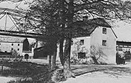
 Kvarndammen och mjölnargården vid Danviken 5 juni 1909
Kvarndammen och mjölnargården vid Danviken 5 juni 1909 |
|
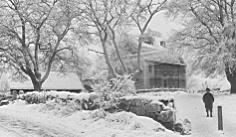
Danviks gamla kyrkogård från Tegelviksgatan, 1901 |
|
"Danviks dårhus" var det skräckens tillhåll som främst av de många Danviks-institutionerna satte folks fantasi i rörelse och har fått ge miljö till många hemska scener i litterära verk. Bengt Lidner skrev en lång dikt, "De galne", Jonas Love Almqvist bidrar med sin "Amorina" - "det stora dårhuset tillägnad", Clas Livijn skriver "Spader Dame, en berättelse i brev, funna på Danviken", Blanche skildrar "hemmet för mänsklighetens djupaste elände", Topelius låter sin fältskär berätta om "de arma dårarnas ohyggliga stall". |
Gamla, sjuka, veneriskt smittade, spetälska, sinnessjuka ... Listan är ännu inte fullständig: änkehus, invalidhem för gamla militärer, fattighus för barn. Det är många trasiga och magra ungar som växt upp bland människospillrorna på Danviken. Också ett spädbarnshem fanns här en tid. Barnen skulle från "deras spädaste ålder" vänjas vid "arbete och idoghet", skolmästare och husmor hade hand om de små. Många pojkar fick arbete på väveriet hos kommissarie Leijonancker vid Nytorget.
|
Danviken var verkligen något av avstjälpningsplats. Det blev också någon sorts fängelse dit man skickade besvärliga och svårplacerbara figurer. Irrläriga eller bråkiga präster finns en hel rad: Komminister Anander i Klara som angripit predikometoden, kyrkoordningen och den statliga lånebanken. Moraprosten Jacob Boethius,som benådats från det dödsstraff han ådömts för sin på religiös grund lagda kritik av enväldet och riksdagen. Kyrkoherde Ruthström i Ladugårdslandsförsamlingen som gjort sig känd som herrnhutare. Så tar man emot religiösa svärmare och läsare av olika slag, de av Vilhelm Moberg skildrade "åkeanerna" bland många andra.
Ännu ett par underliga öden: På Danviken slutar gamle guldsmeden Michel Hansson, som anklagats för falskmynteri, sitt liv - tack vare Johan III:s nåd. Hansson var ursprungligen dömd att avrättas genom att några av de falska mynten skulle smältas och hällas i hans hals. Och på spetalen dör också finnen Benjamin Duster som utgett sig för att vara en Karl XII som lyckligen undkommit från Fredrikshald. |
|
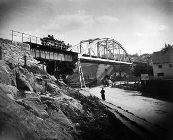
|
Gamla Danviken var ett oroligt ställe - inte bara beroende på de sinnessjuka. På sextonhundratalet hade både föreståndare och präst privilegiet att hålla krog, en präst avsätts 1652 för upprepat fylleri och hustrumisshandel i stor skala. Ibland klagas det över att de intagna byter ut maten mot brännvin eller lämnar sina kläder för samma vara på traktens krogar.
Erik XIV och hans Karin Månsdotter skänker öl till de fattiga ... Under femtonhundratalets sista år jagar man grisar på stans gator, de som infångas ger Danvikens "hjon" kött på bordet. Axel Oxenstierna anser att när man beslagtar "elakt kött" hos en slaktare kan det skickas till de fattiga. Ännu så sent som 1752 bestäms att på torgen konfiskerade varor ska, om de inte är alldeles oanvändbara, skickas till Danviken.
|
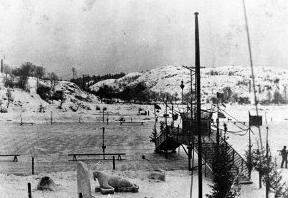
Hammarby idrottsförenings skridskobana med klubb och båthus låg där Bondegatan slutar. Valrossen i is skapades av Emil Åström till iskarnevalen 1909. |
|
Allt det gamla är borta nu och det händer väl knappast att någon stannar på Danviks bro och försöker lyssna om något av det som en gång fanns har stannat kvar i stämningen här. Ett nytt Danviks hem ligger högt uppe på berget vid Finnboda. Bara ett gammalt misshandlat hus står kvar, det som en gång var huvudbyggnaden bland de många husen som hörde till gamlaDanviken. En gång var det ett fint hus, en välkommen ersättning för de ruttna kåkar som man 1717 fruktade skulle "snart alldeles omkullfalla". Arkitekt var Tessin-lärjungen G. J. Adelcrantzoch medel till dess uppförande skänktes av drottning Ulrika Eleonora. Byggnaden stod klar 1725, den innehöll kyrka och sjuksalar. Rakt under den gamla huvudbyggnaden gick en liten å som kallades Danviks rännil, över ån hade man också placerat ett avträde varför Danviken förmodligen hade stans första vattenklosett. |
Kanske det var den lilla ån som blev Danvikens öde. Länge hade man diskuterat möjligheten av att förbinda Mälaren och Saltsjön genom Hammarby sjö.Ett av de tidigaste förslagen kom 1761 då friherre Leuhusen utgav en skrift som gav tips om "sannskyldiga medel till Sveriges välmåga". Bland "några mindre men dock nyttiga förbättringar" nämner Leuhusen också möjligheten av att få en farled från Söder till Saltsjön genom Hammarby sjö och Järla- och Nackasjöarna. Det skulle betyda "en stor genväg för skärgårdsallmogen och mycken vighet för den delen av Södermalms inbyggare" som måste släpa sina varor efter hästar genom gatorna från Skeppsbro-sidan. Tretton år senare är det överståthållare Sparre som vill gräva en kanal mellan Årstaviken och Hammarby sjö men hejdar sig vid tanken på att en (då nödvändig) sänkning av sjön skulle ödelägga Danvikens kvarnar.
| . |
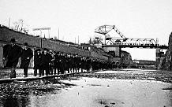
|
. |
Ur Stockholmsliv, Staffan Tjerneld, 1950
Ingenstans i Stockholm kan man iaktta det språngvisa och plötsliga i utvecklingen som är så karakteristiskt för alla större städers tillväxt som vid Hammarby sjö. Då Svenska Dagbladet 1919 ordnade en Hammarbyutställning inför påbörjandet av arbetena med Hammarbyleden låg sjön i det stora hela som hundra år tidigare, ja, på vissa ställen på stränderna var det ingen svårighet att föreställa sig hur trakten såg ut för tvåhundra år sedan. Det hela var en lummig idyll, »ett typiskt mellansvenskt sjölandskap» som Sigurd Wallin skrev 1920, som vaknade till liv då på söndagarna Söderborna kom för att ro och bada eller åka skridskor där.
Konstnären Henrik Krogh, som under många år bodde på Fåfängan vid Danvikstull fångar hela stämningen i några rader i en bok om Hammarbysjön: »På somrarna befor ångslupen Nackanäs leden från Barnängsbryggan vid ändan av Bondegatan genom det smala Sicklasundet, där kölen skrapade i botten, där svärdsliljor i oerhörd rikedom blommade och där gula och vita näckrosor flöto kringsurrade av många olika arter sländor.»
|
| På Hammarbysidan såg man skogsåsar, gröna fält och raka alléer. Och nu bara tjugofem årefteråt är hela Hammarby sjö ett bullrande hamn- och industriområde, där lastångare på fleratusen ton släpas in och ut från kajerna, där kolupplagen tornar upp sig, där nithamrarna dånar vid stapelbäddar och dockor och där Lumas lampfabrik och General Motors bilfabrik byggt en vit så kallad framtidsstad där alléerna förr drog fram.
Att Hammarbysjön så länge kunde leva ett isolerat liv, skilt från den övriga stadens, berodde på att den varken hade någon trafikabel förbindelse med Saltsjön eller Mälaren. Från början lär det ha varit ett mindre sund vid Skanstull, men det sattes på Gustav Vasas order igen för att förbättra fallhöjden vid Danvikstull, där den initiativrike kungen hade en kvarn. Resultatet av fördämningen blev, att vattenytan i Hammarby sjö ofta låg högre än Mälarens, men vid vårflod kunde det hända att förhållandet var det omvända.
Kvarnen fick över huvud stor betydelse för Hammarbysjön. På 1770-talet diskuterades allvarligt att förbinda sjön med Mälaren, men planen realiserades aldrig av hänsyn till vattentillgången vidkvarnen. I 1866 års stadsplaneförslag finns hela den kommande Hammarbyleden projekterad med genombrytningar både vid Skanstull och Danvikstull, ett förslag som dock förverkligades först ett femtiotal år senare. 1925 kunde ledamöterna av stadsfullmäktige företa den märkliga vandringen på botten av den ännu torra Danvikskanalen. Att leden var ett riktigt grepp har ingen satt i fråga,även om det självfallet var smärtsamt, att den idylliska Hammarby sjö utplånades till den grad att till och med en stor del av vattnet försvann. Men det var i alla fall tack vare Harnmarbyleden som Slussfrågan kunde lösas på ett så lyckligt sätt.
Men vi skall ett slag be att få återvända till den gamla romantiska Hammarby sjö och försöka rekonstruera det så gott det går.
En viktig punkt vid sjön var som sagt Danviken, och det berodde inte enbart på den gamla kvarnen, som hämtade sin kraft ur ett endast ett par meter brett stensatt avloppsdike. Här gick också landsvägen ut från staden mot Värmdön och skärgården och här låg den gamla tullen i en miljö, som var den pittoreskast tänkbara. Södra varvets alla skjul och längor passerade vägen för att sedan smyga in vid foten av Fåfängan och löpa inte långt från Danvikens klockargård, som låg ungefär där spårvagnen nu har sin vändslinga.
|
. |
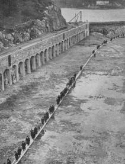
Vägen gjorde en mjuk båge framför kvarnen och entrén till Danvikens hospital och runt den delvis sävbeväxta vik av Danvikssjön, som kallades Kvarndammen och förband kvarnbäcken med sjön. Därefter fortsatte landsvägen i strandskoningen vid foten av det höga berget Klippan, en sträckning som den mycket länge haft.
På Tillaei karta från 1733 finner man den där med beteckningen »vägen till skärgården». På våren måtte detta sällsamma landskap ha gjort ett starkt intryck på dem som färdades på vägen, de plötsliga bergsklackarna och mellan dem dungar med blommande hägg och rönn. Det kunde säkert vara ångande hett här inne bland bergen om nu inte den kalla försommarnordosten kom ilande genom dalgången mot Saltsjön.
|
Kvarnarna - de spelar en stor roll för Hammarby sjö. När Gustav Vasa bestämde om spetalens flyttning beslöt han också att en smedja och en kvarn skulle anläggas vid den lilla rännilen. För att få större fallhöjd uppdämdes den då betydligt mindre sjön genom dammanläggningar vilket medförde att en hel del gårdar sattes under vatten och att Långsjön bildades där det förut varit en dalgång. Senare är kvarnarna det största hindret för alla kanalplaner.Men år 1900 då projektet på allvar togs upp utgjorde några kvarnar inte längre ett hinder. 1914 beslöts att leden skulle anläggas och Hammarby sjö sänkas och tre år senare påbörjades arbetet med jordschaktning och bergsprängning för den del som kallas Danvikskanalen.
Därmed förvandlades en idyllisk insjö till ett industriomkransat hamnområde. Och det fanns många som sörjde, många som hade glada minnen från den vackra sjön och dess lummiga stränder. Kullroddbåtarna löper ut från Hammarby tull. Ångsluparna Nackanäs och Sickla tuffar iväg från Barnängsbryggan och ut genom det smala Sicklasundet där kölen skrapar i botten och svärdsliljorna böjer sej för svallvågorna. "Hammarbykapellet" håller ibland konsert med valthorn och ess-kornett från en roddbåt ute på sjön. Hammarby roddklubb tränar och småbåtarna lämnar bryggorna på lördagskvällarna när lägereldar tänds och dans och stoj hörs hela natten till söndagen. Kringstränderna och i vattnet syns badande "obekymrade om kön och simdräkt". I Sickla folkpark kan man höra Branting tala en första maj eller se "buskteater".
Vintertid är det skridskobana på isen, isjakter och skridskosegel blåser förbi pimpelfiskare och isupptagare. Och vildmarken är nära - får man tro en uppgift (i Mårten Holks "Från tull till tull") hände det så sent som 1873 att vargar gick över isen och knep Bomullsspinneriets bandhund vid Barnängen.Det kan också berättas om kloakutlopp och den "stinkande pesthärd" som ibland debatteras av myndigheterna.Men det är som den försvunna idyllen man vill minnas Hammarby sjö. För det förlorade står alltid paradiset nära. Och särskilt nära står en grönskande och mjuk idyll som bytts ut mot svarta kolupplag och effektiv industri.
På berget väster om gamla Danviken stod spetalens klockstapel och kvarn på sluttningen, högst upp låg Danviks skans. Befästningen vid Danviken påbörjades på sextonhundrafyrtitalet, det var en så kallad fyrhörnig stjärnskans man planerade. Arbetet intensifierades särskilt under den tid då Karl X Gustav hade planer på slott vid Mosebacke och därför var mån om Söders befästande. En dansk resenär 1660 berättar att "hvad SiöWegen anlanger kan ingen komma ind till Stockholm, fordi dee haffue paa denne Malm longt ute, straxwed siöen på en hög Bergsklippe lagt En Scantze, på huilchen endnu arbeidess, (her beres aff folch, materialia op, thi dee her op kan huerchen ache eller komme med hest eller med schauffbarer; eller brucha vinde). Thenne Scantze kand beschyte den ringeste Baadt som vill indtill Stockholm". |
|
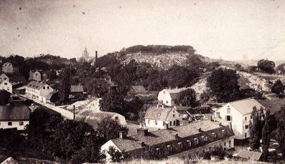
Klockargatan vid Danvikstull. 1890
|
Det är f. ö. möjligt att namnet Danviken uppstått genom att danskarna seglat in och ankrat sina skepp i viken här. Fantasifulla historiker har gissat på att namnet ursprungligen varit Tandviken och berättat en historia om att Kristian I 1471 sårades vid Brunkeberg av en pil som slog ut tre av hans tänder - varefter Kristian lät föra sig undan till fartygen i viken för att omplåstras. I viken lär också kung Sigismund av olämplig vind ha tvingats ankra på sin färd mot Polen och därvid berövats riksregalierna som han tänkt ta med ut ur landet.
|
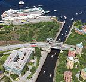
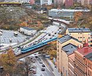
|
|
Så sent som peståret 1710 byggde ryska krigsfångar en kanonväg upp till berget. Men då hade befästningen inte lång tid kvar. I december 1773 kommer grosshandlare Fredrik Lundin med två ansökningar till politikollegium, han har tillhandlat sig en tomt av bildhuggaren Daniel Kindgren vid Tegelviken, nu vill han också inköpa Masthamnen, ett område som benämns Foppe Ottos tomt samt den så kallade Skansen, "ett högt och obrukbart berg".Vid den aldrig använda skansen bygger Fredrik Lundin sin fåfänga, ett litet lusthus där det skulle tänkas och drömmas, ätas och drickas. Belåten kunde han sitta i stans vackrast belägna fåfänga och ta emot sina många gäster. Men kanske utsikten är alltför storslagen, kanske drömmarna blir alltför ostyriga ... hur som helst, sex år senare är direktören inblandad i den stora von Plomgrenska konkursen. I ett brev tar han på sig skulden för de bedrägerier som förekommit och flyr från Stockholm. Gustav III som lovat en del utländska fordringsägare att hjälpa dem till deras lagligarätt i konkursboet blir rasande när han får höra att Lundin försvunnit. Polisen arbetar febrilt för att infånga honom men grosshandlaren lyckas fly till Norge.
Fåfängan ingick i det lundinska konkursboet och försåldes av borgenärernas representat till en grosshandlare Asplund. Ännu några grosshandlare köper och säljer, 1839 är det den skotske grosshandlaren James Paton som blir ägare av berget, lusthuset och en fyrti år tidigare uppförd malmgård intill Masthamnen. |
Omkring 1840 är det modernt att bo och ha sommarnöje vid Fåfängan. Det är nära till staden och även om vintrarna kan man njuta av ett härligt lantliv här intill "stora segelleden". Paton har många kända grannar, Hierta på stearinfabriken och Barnängen, överceremonimästare Broman bor i närheten, Frans Schartau har en stuga på berget.
| Från Paton gick Fåfängan i arv (1878) till de sista privata ägarna, familjen Funch.I dag är det förr avstängda privatberget allmänhetens egendom. Men hur länge får vi behålla det som kallats ett "enastående exempel på en vildmarks inträngande i en huvudstads hjärta"? Österbroledens utformande kommer att ge svaret.
Danviks tull och krokar ... En gång slingrade en krokig Värmdöväg sej ut här, passerade rännilen, tog en sväng kring Klippan. Vid tullen (som först låg ända inne vid Sturekapellet men succesivt flyttades utåt, sist till spårvagnens nuvarande ändstation) gick den gamla utfarten mellan Liljeholmens stearinfabrik och dess arbetarbostäder. Fabriken grundades 1839 och fabrikationen pågick först i ett litet trähus på Liljeholmen intill bron mot Hornstull. Redan två år efter starten flyttade man till Danvikstull - där tomter uppköpts och byggnader börjat uppföras. |
|
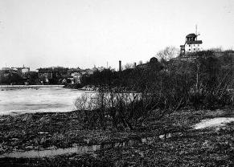
Hammarbysjön från Henriksdalsberget norrut. T h Danviksklippan, längst bort t v Södermalm kring
Bondegatans mynning. |
|
|